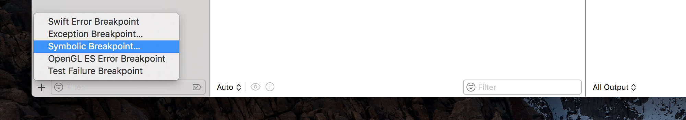
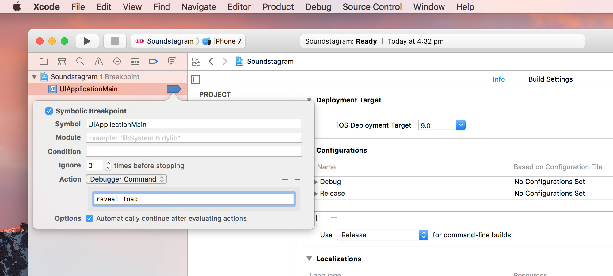
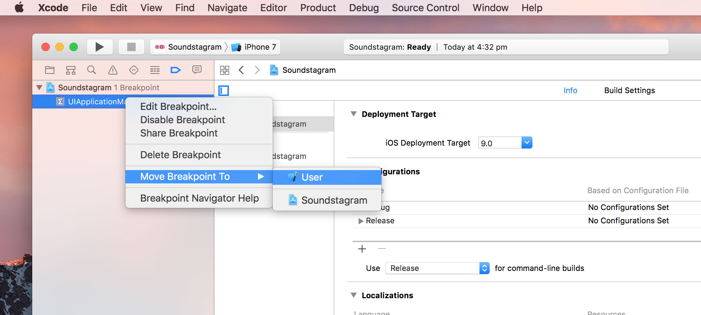
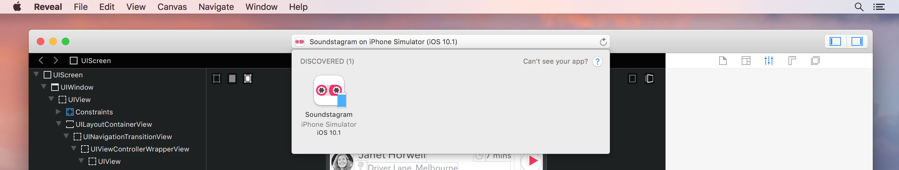
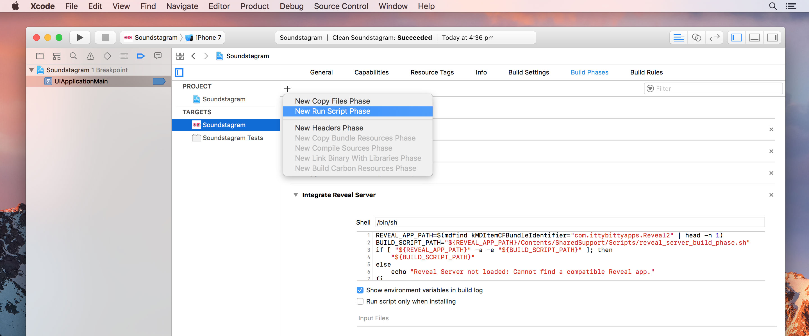
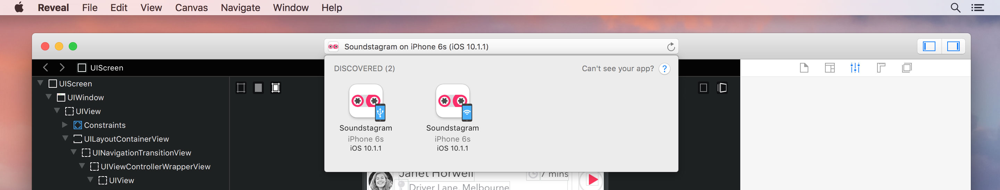

Loading the Reveal Server framework via an Xcode Debugger Breakpoint is a great way to let you inspect any project with minimal or no changes to the project's files. It also means you don't need to worry about accidentally shipping a release build of your app linked with the Reveal library.
The following steps only need to be performed once for each computer and user account you're running Reveal on:
Click Continue to finish the installation.
To learn more about Reveal Server debugger commands, please refer to the corresponding guide.
Open your iOS or tvOS project in Xcode, and select View → Navigators → Show Breakpoint Navigator.
In the bottom left of the pane, click the + button and select Symbolic Breakpoint…

Enter UIApplicationMain into the Symbol field.
Copy and paste the following command into the field below:
reveal loadCheck Automatically continue after evaluating actions.

Right click the newly created breakpoint and select Move Breakpoint To → User.

You can enable and disable the breakpoint as you would any other. User breakpoints are available across all Xcode projects.
In Xcode, build and run your application under the iOS or tvOS Simulator.

You should now be able to switch to Reveal and see your iOS or tvOS application listed. Select your app and verify that you can see a snapshot matching what you see in the simulator.
The steps outlined above are sufficient for debugging any application using Reveal in the iOS or tvOS Simulator. However, if you would also like to use Reveal when debugging your applications on device, there are a few extra steps you'll need to perform for each project:
Open your project in Xcode, then select the project's icon in Xcode's Project Navigator.
Select the target you want to inspect using Reveal from the TARGETS list.
Select the Build Phases tab, click the + button and add a New Run Script Phase — name it "Integrate Reveal Server". Paste in the following shell script:
REVEAL_APP_PATH=$(mdfind kMDItemCFBundleIdentifier="com.ittybittyapps.Reveal2" | head -n 1)
BUILD_SCRIPT_PATH="${REVEAL_APP_PATH}/Contents/SharedSupport/Scripts/reveal_server_build_phase.sh"
if [ "${REVEAL_APP_PATH}" -a -e "${BUILD_SCRIPT_PATH}" ]; then
"${BUILD_SCRIPT_PATH}"
else
echo "Reveal Server not loaded: Cannot find a compatible Reveal app."
fi
This build phase will locate Reveal on your computer and copy Reveal Server framework as a resource into your application – but only when building with Debug configuration.
In Xcode, build and run your application on an iOS or tvOS device using a scheme that is set to use the Debug configuration. Ensure that the device is on the same Wi-Fi network as Mac running Reveal, or connected to your Mac by its USB cable.

You should now be able to switch to Reveal and see your iOS or tvOS application listed in. Select your app and verify that you can see a snapshot matching what you see on device.
No code needs to be added, nor any headers imported for Reveal integration. The breakpoint you created earlier will load the framework automatically at launch and start the necessary Reveal services within your app.
If you have any problems or questions about integrating Reveal into your app, head over to our support site.